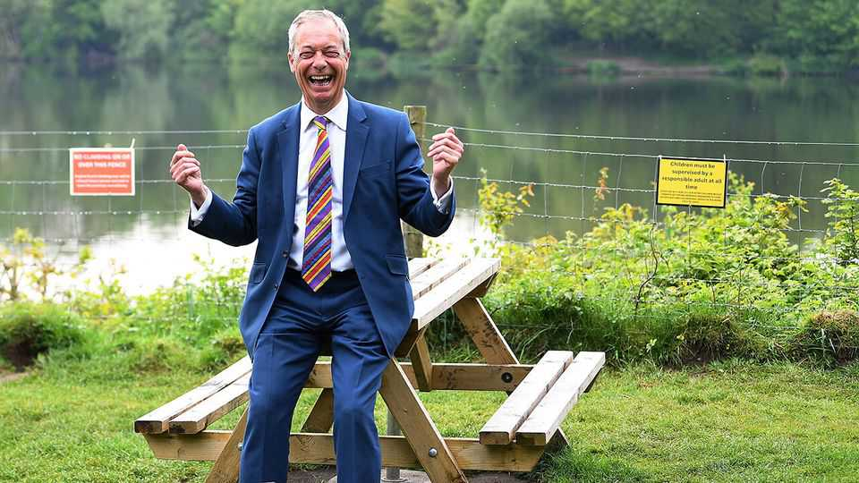

Nigel Farage’s stunts made him a successful politician. They won’t make him PM
The theatrics could point to Reform UK’s weaknesses
July 9th 2026

In Britain, you can pay £500 ($670) to stand next to the prime minister on live TV. A humbling election-night tradition sees politicians line up on stage with fellow candidates as the votes in their constituency are read out. Plenty of publicity-seekers think the election deposit is a fair price to pay for a moment in the spotlight. In 2024 Sir Keir Starmer—for now still the prime minister—gave his acceptance speech flanked by a man dressed as Elmo, a furry red children’s-TV character.
Later this year Nigel Farage, the leader of the populist-right Reform UK party, will be treated to a particularly surreal election-night spectacle. No candidates for the major parties will stand against him in the by-election he triggered with great fanfare on July 7th, by resigning as MP for Clacton in a televised address (he hopes to be re-elected). Instead, the man who aspires to become prime minister at the next general election will be surrounded by satirists and loonies. Count Binface, whose real name is Jonathan Harvey, has already emerged as a leading challenger.
The farce is befitting of the by-election. Mr Farage called it to set the cat among the pigeons while he faces scrutiny of his finances, including an investigation by Parliament’s standards commissioner. The body is reviewing a £5m gift made to him by cryptocurrency billionaire Christopher Harborne. Mr Farage told viewers the by-election would be the “people versus the establishment”. In reality, it is a squalid attempt to have the residents of Reform’s safest constituency clear him of wrongdoing. Now it looks as though the joke might be on the rabble-rousing populist.
The misstep is revealing. Mr Farage has built his career on political mischief-making. His stunts as a member of the European Parliament caught the attention of British voters in the 2000s. In the 2010s, they made him a household name, culminating in the Brexit referendum in 2016. His dramatic returns to politics in 2019 and 2024 allowed his new party, the Brexit Party (now Reform), to give the Conservatives a bloody nose. In these moments, he dominated British politics.

The challenge facing Reform now is different. It has led opinion polls for more than a year and must transform from a loud insurgency into a credible alternative government—a tall order for a party with just eight MPs. After setting an artificial deadline of May 2026 for accepting defectors, fewer crossed the floor than Mr Farage might have hoped. Two, Robert Jenrick and Suella Braverman, were given official spokesperson roles, for the treasury and education, along with the party’s deputy leader, Richard Tice (business, trade and energy), and its former chairman, Zia Yusuf (home affairs). But the party still has no spokespeople on issues including defence, foreign policy, health and welfare.
Neither does it seem as if the party is substantiating its policy platform. Though Mr Jenrick has rowed back on Reform’s previous profligate tax-and-spend plans, the party has adopted unworkable proposals for mass deportations. It has offered little detail on policy for the National Health Service or Britain’s armed forces. The public seems to have noticed. According to Ipsos, a polling firm, the share of Britons who say Reform is “ready to form the next government” has fallen from 29% in September 2025 to 21% in June 2026 (see chart 1).

At the same time, Reform’s political space has shrunk. In July 2025 around 30% of people had a favourable view of Mr Farage, according to YouGov, another pollster. That was far higher than of his rivals, Sir Keir and Kemi Badenoch, the leader of the Conservatives. Since then Mr Farage’s rating has fallen to 25%; Ms Badenoch has experienced a surge, to 31%; and Labour has all but replaced Sir Keir with his presumed successor Andy Burnham, who is viewed favourably by 34% (see chart 2). Restore Britain, a new far-right party, has siphoned some voters from Reform’s right. Meanwhile the share of Britons saying immigration—the party’s raison d’être—is their top issue has fallen, perhaps owing to declining migration rates and a slight slowdown in small-boat arrivals across the channel.
That is not to say Reform has hit a ceiling. Plenty of voters hold views similar to Mr Farage’s and are dissatisfied with Labour and the Conservatives. His party continues to lead opinion polls and did well in the local elections in May. The political conditions for the populist right could improve, not least if Mr Burnham turns out to be a dud. But Mr Farage’s party has not expanded its appeal in the past year.
Amid these challenges, a by-election in Clacton is not so much a show of defiance—as Mr Farage would portray it—as a retreat to his comfort zone. The populist leader would rather be pouring pints for a photo-op than poring over policy proposals. Playing ringmaster for the media circus comes more naturally than marshalling prospective ministers. There is every chance that Mr Farage wins Clacton (barring an unthinkable victory for Count Binface) while dashing his chances of becoming prime minister at the same time.■
For more expert analysis of the biggest stories in Britain, sign up to Blighty, our weekly subscriber-only newsletter.